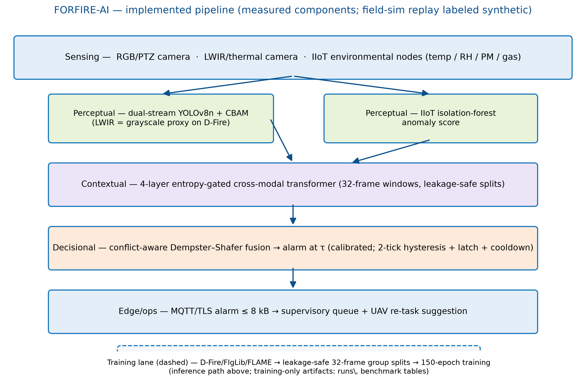
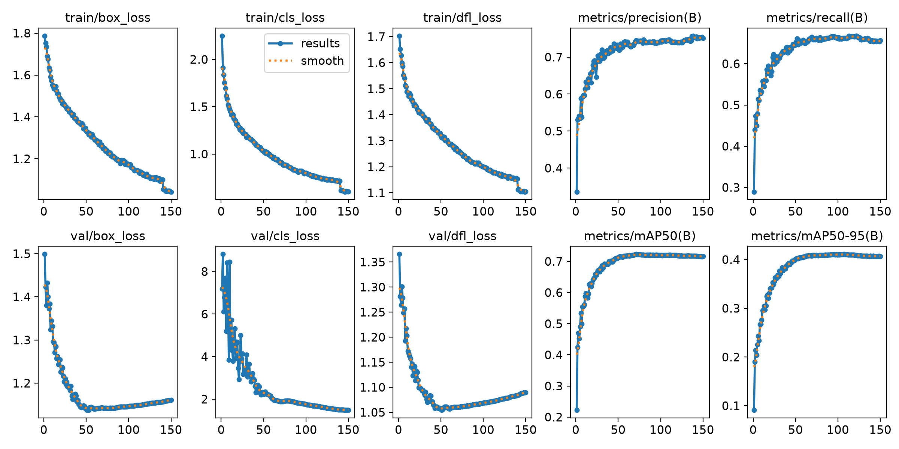
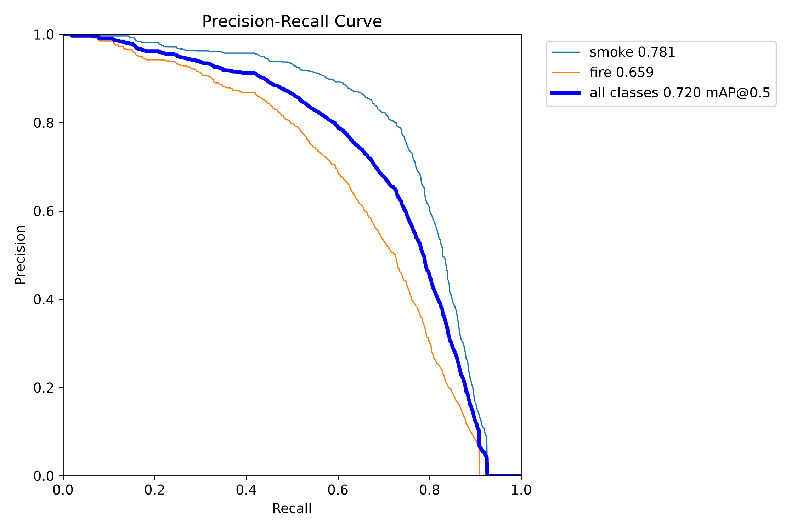
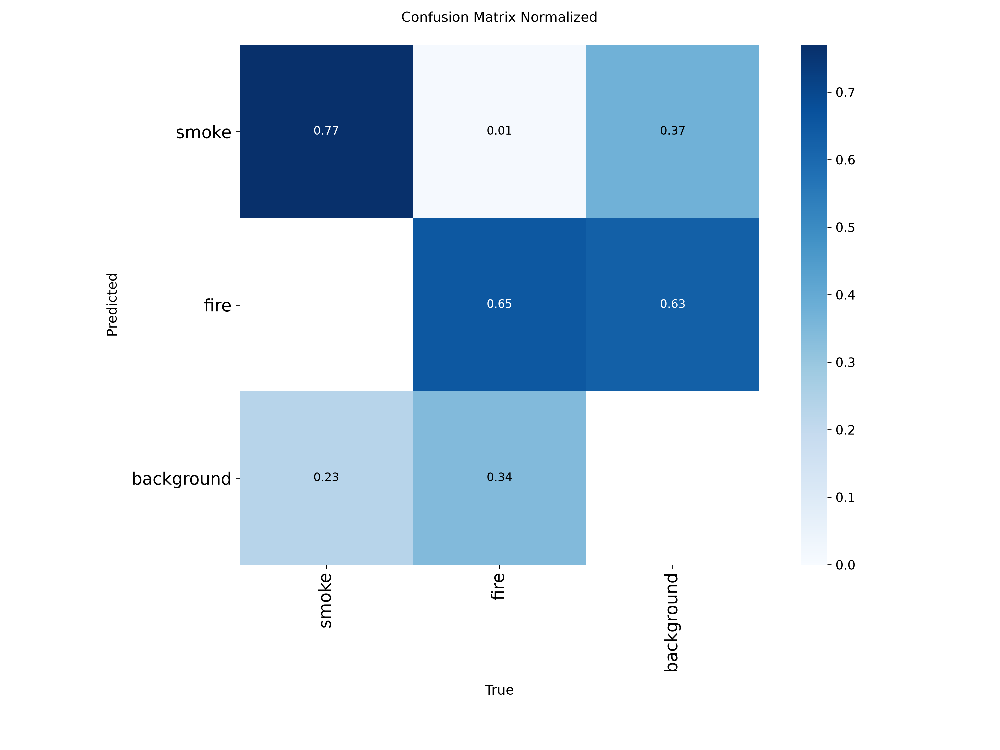
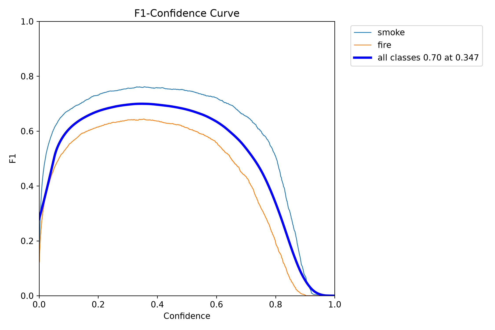
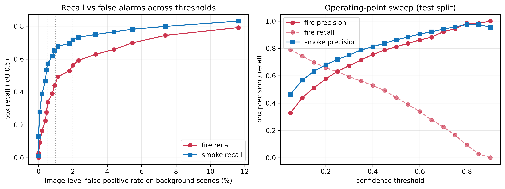
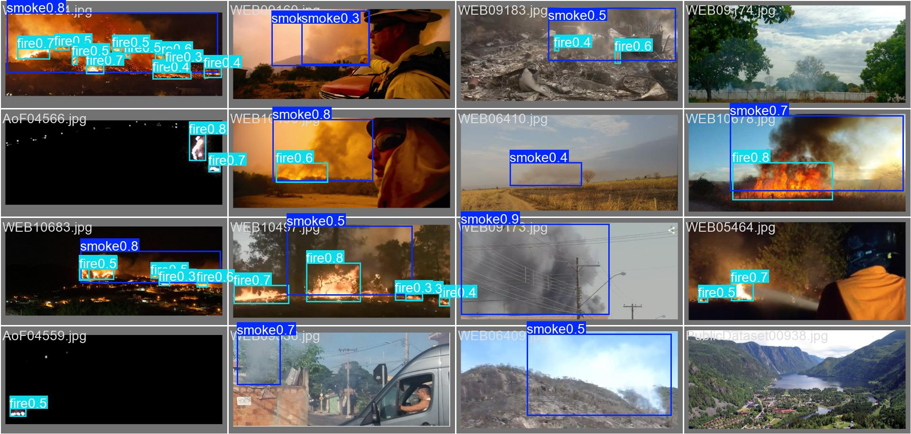
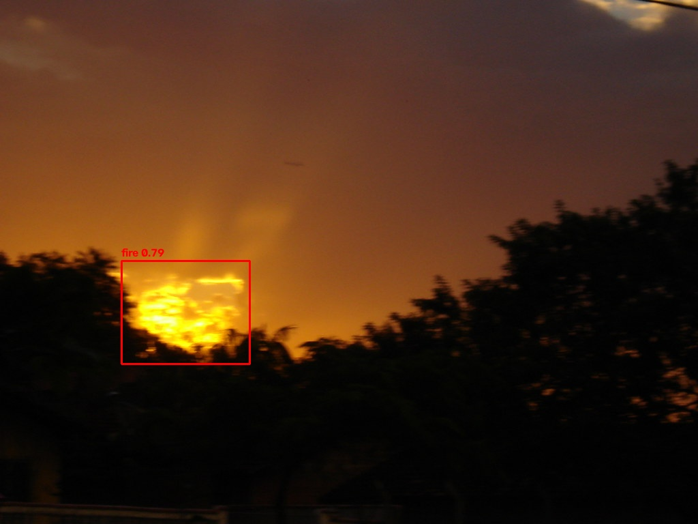
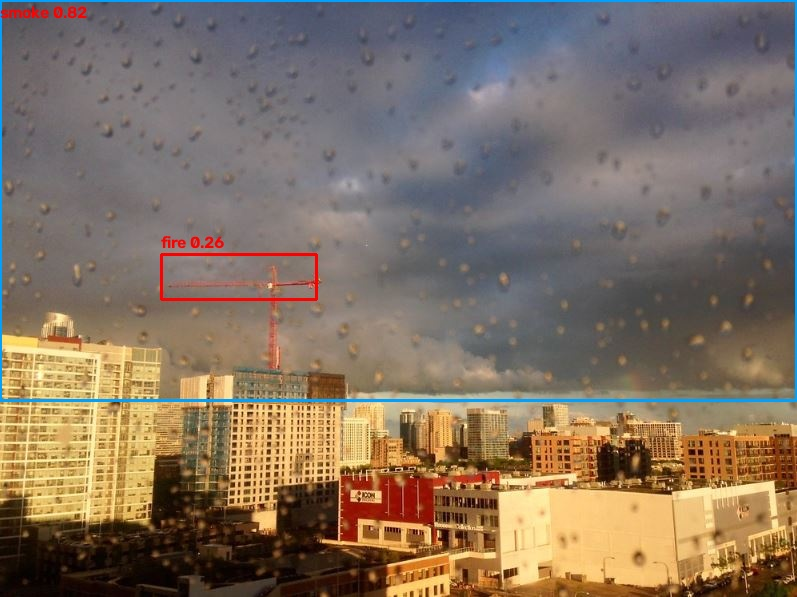

L’article scientifique
Le manuscrit complet décrivant l’architecture, la méthodologie et les résultats — lu et approuvé par l’équipe.
Accès protégé par mot de passe 🔒
Détection et prévention des incendies de forêts par l’IA — forêts des zones côtières Tunisie–Italie.
Un système d’alerte précoce multimodal : deux caméras (couleur + thermique), des capteurs environnementaux connectés, et trois “experts” en IA qui se contrôlent mutuellement avant de donner l’alarme.
Imaginez une tour de garde qui ne dort jamais. Une simple sonnette ne suffit pas en forêt : la poussière ressemble à de la fumée, un rocher chaud ressemble à un feu. Notre système fait donc travailler trois “experts” ensemble — et chacun peut douter des autres.
Deux réseaux de neurones regardent la caméra couleur et la caméra thermique ; un capteur “renifle” les données environnementales. Chacun annonce : “je suis sûr à 62 %”.
Un transformateur relit les 32 derniers instants comme une histoire : ce signal monte-t-il comme un vrai feu, ou n’est-ce que du bruit ? Les experts incertains sont baissés d’un ton.
Une règle de vote mathématique (Dempster–Shafer) combine les avis. Si deux experts se contredisent, elle devient prudente. L’alarme doit se répéter avant d’être confirmée.
L’architecture vient d’un article scientifique ; nos contributions la rendent réelle, correcte, testable et honnête.
Nous avons implémenté le système complet et documenté chaque détail manquant de l’article comme hypothèse explicite — rien n’est inventé en silence.
Nous avons prouvé que le découpage officiel du jeu D-Fire place des images quasi identiques dans l’étude ET l’examen. Nous regroupons les images par vidéo pour une évaluation sans fuite.
Chaque résultat est donné avec un intervalle de confiance (1 000 rééchantillonnages), un décompte explicite des fausses alarmes et les temps de réponse bruts.
Le jeu D-Fire est réputé ambigu (0 = fumée ou feu ?). Notre script vérifie automatiquement les comptes d’étiquettes contre les valeurs publiées : correspondance exacte.
Quand une alarme peut se répéter, combien de temps attendre après une validation humaine : règles formalisées, testées, avec un cas limite corrigé (re-armement pendant le refroidissement).
Le seuil d’alarme est calibré sur des données réelles ; si on lui donne des données sans étiquettes, le script refuse de produire une configuration fausse.
Export ONNX, quantification INT8 pour Jetson, messages d’alarme plafonnés à 8 ko — assez petits pour les liaisons radio forestières.
55 tests automatiques protègent les maths de fusion et les règles de sécurité ; chaque chiffre de ce site provient d’une mesure réelle.
Le chemin des données, de la caméra à l’alerte. La piste en pointillés est la partie entraînement uniquement.

Modèle : YOLOv8n monocapteur RGB, 150 époques, jeu de test D-Fire (3 264 images, 3 990 instances), découpage sans fuite. Chaque chiffre vient d’une mesure réelle.
| Métrique | Boîtes (IoU 0.5) | Niveau image |
|---|---|---|
| Précision | 0.739 | 0.971 |
| Rappel | 0.664 | 0.945 |
| F1 | 0.700 | 0.958 |
| mAP@0.5 / mAP@0.5:0.95 | 0.719 / 0.385 | — |
| Exactitude (IC 95 %, bootstrap) | — | 0.955 [0.948, 0.962] |
Fumée: 0.777 · Feu: 0.650 — la fumée est plus facile à repérer tôt ; le feu de nuit reste difficile.
Avec le seuil de confiance, on peut choisir : ≤ 0,5 % de fausses alarmes → rappel feu 0,53 · ≤ 1 % → 0,59 · ≤ 2 % → 0,70. La courbe complète est dans la galerie.
Le niveau image (0,958) est le chiffre utile pour l’alerte : « y a-t-il de la fumée ou du feu sur cette image ? » — dessiner la boîte exacte est plus difficile, d’où le 0,719. Niveau contextual : exactitude 0,936 sur fenêtres réelles. Les tableaux de simulation terrain sont marqués SYNTHÉTIQUE.
Le manuscrit complet décrivant l’architecture, la méthodologie et les résultats — lu et approuvé par l’équipe.
Accès protégé par mot de passe 🔒
Toutes les figures proviennent des mesures du projet (cliquez pour agrandir).






Voici les vraies erreurs du modèle (scènes sans feu). Les classifier honnêtement sert à les réduire.


50 faux positifs sur 1 504 scènes sans feu au seuil 0,25 — et le réglage du seuil permet de descendre à 7 (0,47 %) : voir la courbe de compromis.
As ongoing future work, we are developing a reproducible cross-domain smoke-detection benchmark using Pyro-SDIS v2.0 for training and threshold calibration, and Boreal Forest Fire UAV imagery for independent external testing. The study will compare lightweight detectors and assess whether recall and image-level false-alarm rates transfer when the source-calibrated threshold is applied unchanged to the UAV domain. This work is currently in progress; no results are claimed at this stage.
SOON — Database of Mr Mehrez.
Cet article n’est pas encore publié. Le mot de passe protège son contenu pendant la période de révision — demandez-le à l’équipe FORFIRE-AI.